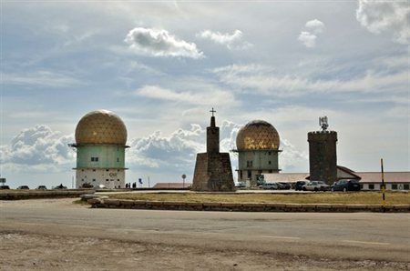
Torre & Estância de Ski
38 km · 45 minO ponto mais alto de Portugal continental (1993 m). Desportos de neve, pistas de ski e trenó, e lojas tradicionais de queijo da serra e fumeiro regional.
A nossa aldeia de Paços da Serra está estrategicamente situada entre Gouveia e Seia, permitindo aceder aos pontos mais altos e recantos mais serenos da montanha.

O ponto mais alto de Portugal continental (1993 m). Desportos de neve, pistas de ski e trenó, e lojas tradicionais de queijo da serra e fumeiro regional.
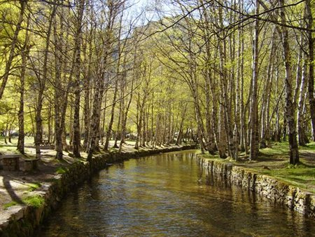
Antigo vale glaciar rodeado por bosques de bétulas e escarpas graníticas onde nasce o rio Zêzere. Um dos cenários mais poéticos da montanha.
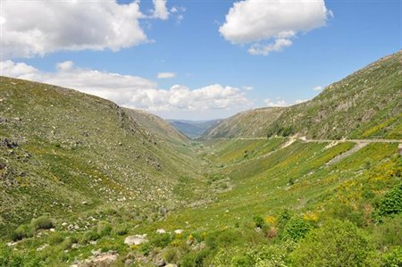
A maior lagoa do maciço central, de origem glaciar. No inverno ganha contornos dramáticos e serenos, ponto de partida para o trilho do Covão dos Conchos.
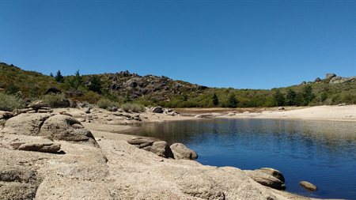
Praia fluvial de altitude a 1400 metros com águas límpidas entre rochedos, apoio de praia, canoas e passeios pedestres em redor da albufeira.
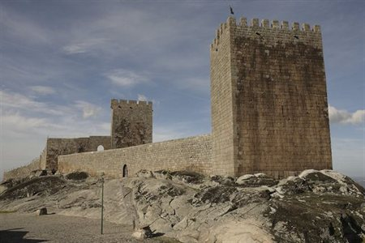
Instalada num deslumbrante desfiladeiro glaciar com socalcos e piscinas naturais de água pura da ribeira de Loriga.
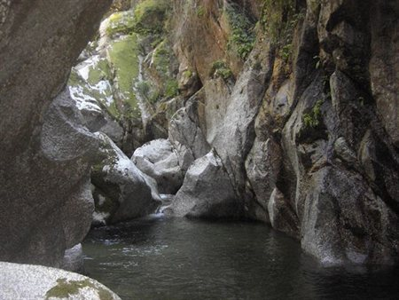
Enquadrada num souto secular com pequenas cascatas, pontes em madeira e piscinas de água corrente muito frescas no verão.
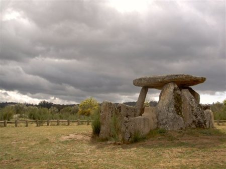
Um dos maiores museus gastronómicos da Península Ibérica, com recriação de fornos tradicionais a lenha, oficinas de moagem e restaurante regional.
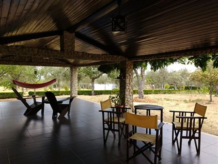
Fundado no século XVIII em Gouveia, este convento franciscano destaca-se pela sua arquitetura sóbria em cantaria de granito e claustro sereno.
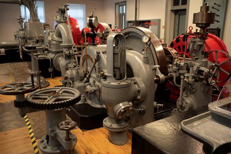
Instalado na antiga Central Hidroelétrica da Senhora do Desterro, preserva a maquinaria original que aproveitou as águas da serra no início do séc. XX.
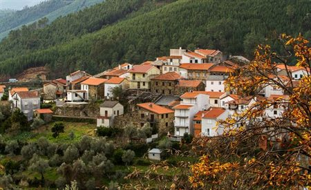
Aldeia Histórica do séc. XII com imponente castelo medieval e ruelas calcetadas, reconhecida como a capital do voo livre em parapente.
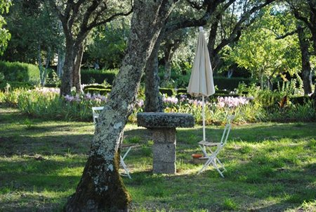
Templo com imponente fachada barroca em cantaria de granito, retábulos de talha dourada e valioso património de arte sacra beirã.
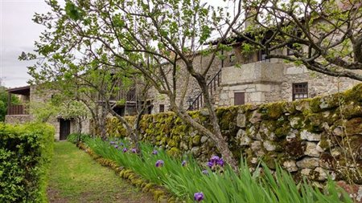
Monumento quinhentista manuelino no centro histórico de Seia, integrado no tradicional roteiro secular das capelas dos Passos da Paixão.
Aldeia beirã natal do escritor Vergílio Ferreira, com pelourinho histórico, casas solarengas de granito e recantos poéticos da serra.
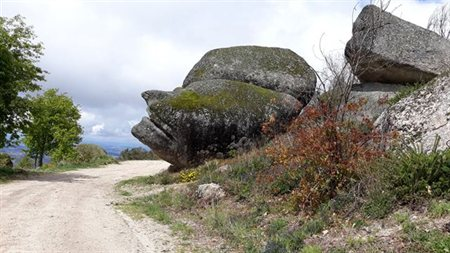
Dólmen megalítico pré-histórico com esteios monumentais em granito preservado na paisagem campestre do vale do Mondego.
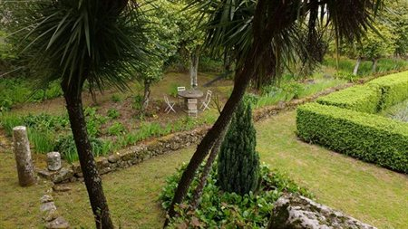
Centros oficiais do Parque Natural da Serra da Estrela com mapas cartográficos de trilhos, orientação de caminhadas e apoio ao visitante.
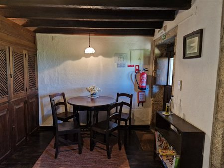
Cozinha regional beirã de referência em espaço rústico acolhedor, famosa pelo cabrito assado no forno a lenha, chanfana e tábuas de queijo da serra.
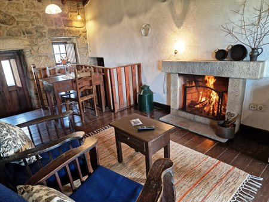
Ponto de paragem acolhedor e próximo da quinta para café da manhã, queijadas da serra, petiscos tradicionais e ambiente descontraído de aldeia.
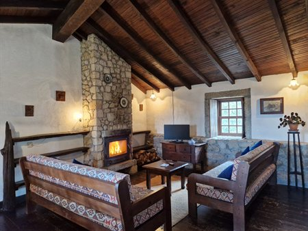
Pizzas artesanais de massa fina cozidas em forno de lenha e massas italianas frescas em Seia, ideal para jantares informais em família.